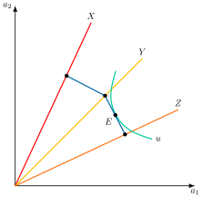
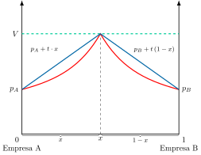
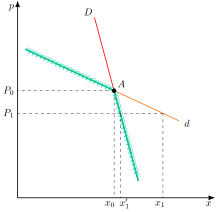
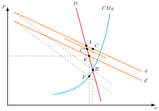
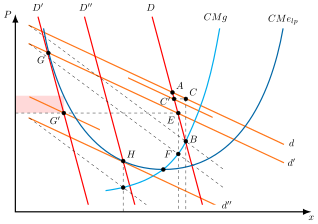
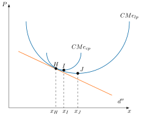
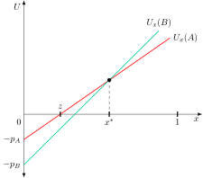
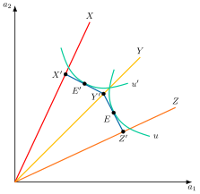
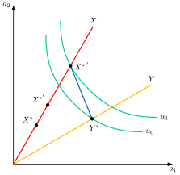
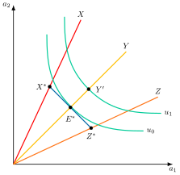

Apuntes para la oposición al Cuerpo de Diplomados Comerciales del Estado
10 Análisis de mercados (IV). Diferenciación de productos. La competencia monopolística y otros desarrollos.
10.1 Introducción  1'
1'
La Teoría microeconómica neoclásica se construyó sobre el supuesto de la existencia de bienes homogéneos para modelizar el comportamiento de los agentes económicos. No obstante, en la práctica se observa que muchas industrias producen un elevado número de bienes diferenciados en muchas características o dimensiones, tales como la localización geográfica, la calidad, el diseño o el grado de servicios proporcionado con el producto entre otros.
Esta insatisfacción teórica llevó a autores como Sraffa, Robinson o Chamberlin a desarrollar modelos de Competencia Imperfecta, entre los que se encuentran los de competencia monopolística, donde el supuesto fundamental es la existencia de productos no homogéneos, es decir, diferenciados, entendidos como sustitutivos cercanos entre sí desde el punto de vista del consumo.
Así, la diferenciación puede ser:
Horizontal, los bienes se diferencian por sus características, sin que haya unanimidad entre los consumidores sobre qué característica es mejor (por ejemplo, un jersey rojo o negro).
Vertical, todos los consumidores coinciden en qué variedad es mejor, de modo que a igualdad de precio todos elegirían la de mayor calidad, y solo difieren en cuánto están dispuestos a pagar por ella1.
Por consiguiente, el objetivo de esta exposición es el análisis de la competencia monopolística a través del siguiente esquema:
Justificación de la diferenciación de productos, con el modelo de Lancaster.
Diferenciación horizontal espacial, donde se desarrollará el modelo de Hotelling,
Diferenciación horizontal no espacial, donde se analizará el modelo de Chamberlin y el modelo de preferencia por la variedad de Dixit-Stiglitz.
Diferenciación Vertical, que se analizará modificando el modelo de Hotelling.
10.2 Justificación de la diferenciación de productos 1'
Comenzando con la justificación, la diferenciación de productos hace que el concepto de industria o mercado sea más ambiguo2. Así, cabe plantear el por qué las empresas buscan diferenciarse:
Por el lado de la oferta, la diferenciación supone que cada empresa ofrece su producto en exclusiva, por lo que la empresa evita una demanda totalmente elástica, logrando enfrentarse a una demanda con pendiente negativa que le otorga poder de mercado, es decir, puede influir en el precio de su variedad y aumentarlo sin perder a todos sus clientes.
Por el lado de la demanda, se justifica por el modelo de Lancaster de demanda de características3.
Lancaster parte del enfoque de que lo que demandan los consumidores no son bienes en sí mismos, sino las características presentes en ellos, que son las que en realidad les permiten satisfacer sus necesidades. Así, dichas características coexisten en un mismo bien en distintas proporciones.
Gráficamente, como se observa en la Figura 10.1, partiendo de que hay dos características, \(a_{1}\) y \(a_{2}\), se dibujan los vectores correspondientes a cada uno de los bienes, \(X\), \(Y\), \(Z\) que dependiendo de la pendiente incorporarán más de una característica u otra. Además, sobre cada vector se marca el punto que alcanzaría el consumidor si gastase toda su renta en ese bien, de modo que la distancia al origen depende del precio, y la unión de esos puntos forma la frontera de posibilidades de consumo. Si baja el precio de un bien, su punto se aleja del origen y la frontera se amplía. No obstante, el consumidor puede elegir consumir dos bienes como hace en \(E\), para una curva de indiferencia, \(u\).

Así, esta nueva teoría de la demanda permite explicar tres cuestiones que la teoría neoclásica no era capaz de explicar:
Ante bajadas del precio de un bien, el consumidor puede no variar su comportamiento dada su preferencia por una determinada característica (a no ser que baje mucho), explicando la fidelidad a las marcas.
Si una nueva marca desarrollase un producto \(H\) con una combinación equilibrada de características entre los bienes \(Y\) y \(Z\), como se observa en el gráfico, se haría con la demanda del consumidor, explicando el desarrollo de nuevos productos.
Además, esta teoría justifica la importancia de dar a conocer las características de un producto, explicando la publicidad.
Una vez introducida la justificación de diferenciación de productos, a continuación analizaremos los modelos de diferenciación horizontal.
10.3 Diferenciación horizontal espacial6'30"
Comenzando con los modelos de diferenciación horizontal espacial, estos estudian un enfoque direcciones mediante modelos de oligopolio. En ellos las preferencias de los individuos se definen sobre el espacio de características, es decir, hay un solo bien con distintas características4, y los individuos demandan un determinado nivel de características –por ejemplo, el nivel de azúcar en la Coca-cola: los consumidores demandan Coca-cola normal, o light, o zero–.
Concretamente, los bienes se diferencian entre sí por su localización geográfica, que es una metáfora del grado que poseen de una determinada característica. Así, en estos modelos, cuando una empresa decide su localización, en realidad lo que está decidiendo es el grado de la característica que va a producir5.
Para su estudio se analizará el modelo de Hotelling.
Modelo de Hotelling
El modelo de Hotelling o de competencia espacial (Hotelling 1929) explica la diferenciación horizontal con un producto homogéneo utilizando la competencia espacial, es decir, los bienes se diferencian entre sí por su situación geográfica, que funciona como una metáfora del grado que posee de una determinada característica, por lo que el enfoque va a ser de direcciones, es decir, las preferencias de los consumidores se definen sobre un espacio de características.
Supuestos
Calle lineal de longitud uno y densidad uno.
Consumidores uniformemente distribuidos a lo largo de ella.
Dos empresas, (A) y (B), que venden un producto idéntico con los mismos costes de producción, de forma que en lo único en que se diferencian es en la localización (una en cada extremo)6.
Existe un coste de transporte, \(t\), de los consumidores. Los costes de transporte pueden interpretarse como la heterogeneidad de gustos de los consumidores: si, por ejemplo, los costes de transporte del consumidor son nulos, ello significa que no le supone ningún coste pasar de consumir una variedad a otra, es decir, significa que los gustos son homogéneos, por lo que los individuos no valoran la diferenciación ofrecida por las empresas (es decir, les da igual que las empresas estén situadas en lugares distintos). Lo contrario ocurre si los gustos de los consumidores son heterogéneos (\(t>0\)).
Todos los consumidores consumen, pues asumimos que su excedente, \(V\), es positivo tras pagar el precio y los costes de transporte.
La utilidad del consumidor, \(u\), vendrá dada por su excedente, \(V\), o “predisposición a pagar”, menos el precio pagado, \(P\), menos los costes de transporte, \(t\), que pueden ser lineales, \(t\cdot x\), –líneas rectas– o cuadráticos, \(t\cdot x^{2}\), –curvas convexas–, como veremos. \[u=V-P-t\cdot x \tag{10.1}\]
Gráficamente, en un plano de ciudad lineal, 0 y 1, y de excedente del consumidor como el de la Figura 10.2, si el consumidor se sitúa en \(x\) y cada empresa se sitúa en un extremo, la utilidad que obtiene el individuo de consumir 0 es la misma que la que obtiene de consumir 1: ninguna, pues en los extremos –que es donde están las tiendas–, \(P+t=V\), pues el excedente del consumidor se agota por el precio pagado y por los costes de transporte por el camino recorrido hasta cualquiera de las tiendas. Podemos definir los costes cuadráticos o lineales (costes cuadráticos en rojo, lineales en azul en el gráfico).

Una vez establecidos los supuestos analizaremos los tipos de competencia en la ciudad lineal.
Competencia con localización exógena
Asumimos que las localizaciones de las empresas son fijas, de forma que se mantienen en los extremos. Las empresas deciden, pues, únicamente sobre los precios (equilibrio de Nash en precios).
Un consumidor que esté indiferente estará situado (es decir, tendrá unos gustos) allí donde su excedente neto de comprar el bien en la tienda A (a una distancia x) sea igual a su excedente neto de comprar el bien en la tienda B (a una distancia \(1\text{–} x\)): \(U_{A}=U_{B}\). \[p_{A}+t\cdot x=p_{B}+t\left(1-x\right) \tag{10.2}\]
La demanda de cada empresa será toda la que esté entre ella y el consumidor indiferente, de forma que, operando: \[\begin{aligned} D_{A}\left(p_{A},p_{B}\right)=x=\dfrac{p_{B}-p_{A}+t}{2\cdot t}\\ D_{B}\left(p_{A},p_{B}\right)=1-x=\dfrac{p_{A}-p_{B}+t}{2\cdot t} \end{aligned} \tag{10.3}\]
Dados los supuestos de arriba (localización en los extremos y excedente neto positivo), las demandas obtenidas (y, por tanto, el resto de conclusiones que siguen) serán las mismas con independencia de la forma que adquieran los costes de transporte (lineales –ejemplo visto– o cuadráticos –con \(x^{2}\) y \((1\text{–} x)^{2}\)–). Con máxima diferenciación (localización exógena) da igual costes lineales o cuadráticos.
Los beneficios de una empresa serán: \[\pi_{A}=\left(p_{A}-c\right)\cdot D_{A} \tag{10.4}\] donde \(\left(p_{A}-c\right)\) es el margen unitario de la empresa A y \(c\) es el coste marginal.
Así, el programa de optimización de una empresa será la maximización de los beneficios \[\underset{\left\{ p_{A}\right\} }{\max}\quad\pi_{A}\left(p_{A}-c\right)\cdot D_{A} \tag{10.5}\] de cuya CPO tanto para la empresa A como para la empresa B obtenemos las funciones de reacción: \[FR\left(A\right)=\dfrac{p_{B}+t+c}{2};FR\left(B\right)=\dfrac{p_{A}+t+c}{2} \tag{10.6}\] y usando la simetría del problema, \(p_{A}=p_{B}\), se obtienen los precios y los beneficios de las empresas7: \[\begin{aligned} \pi^{*}_{A}=\pi^{*}_{B}=\dfrac{t}{2}\\ P^{*}_{A}=P^{*}_{B}=c+t \end{aligned} \tag{10.7}\]
Por tanto, se observa que cuanto mayor sea la heterogeneidad de gustos entre los consumidores (es decir, mayor sea \(t\)), más cautivos serán de la empresa más cercana físicamente (es decir, de la empresa más cercana a sus gustos), y, por lo tanto, las empresas podrán exigir unos precios mayores y obtener beneficios más altos. Así, si los gustos de los consumidores son homogéneos, \(t=0\), se dará el resultado de Bertrand (\(p=c\), \(\pi=0\)), mientras que si son heterogéneos, \(t>0\), el precio tendrá un mark-up y los beneficios serán positivos.
Competencia con localización endógena
En el caso de que la localización sea endógena, el juego se define en 2 etapas: primero, las empresas eligen simultáneamente su localización; luego, dada su localización, deciden simultáneamente sus precios. Así, si una empresa decide moverse para el centro, experimentará 2 tipos de efectos contrapuestos: i) efecto demanda (+), pues aumenta su mercado objetivo; y ii) efecto competición (–), pues aumenta la competencia en precios (las empresas se diferencian menos).
Así, ante:
Costes cuadráticos: el efecto competición será mayor que el efecto demanda8, por lo que las empresas se situarán en los extremos de la ciudad (es decir, diferenciación máxima) y los precios serán, por tanto, máximos (d’Aspremont et al. 1979)9.
Si no hay competencia en precios (por ejemplo, porque el Gobierno fija un precio), entonces el efecto competición desaparece y las empresas se localizarán en el centro de la ciudad (es decir, diferenciación mínima).Costes lineales: puede no haber equilibrio. Ello se debe a que, si en una primera etapa las empresas deciden localizarse en el interior del intervalo en lugar de en los extremos, entonces una reducción en el precio de, por ejemplo, la empresa B, atraerá a consumidores situados entre las dos empresas, pero también a consumidores situados a la izquierda de la empresa A. Esto hace que las funciones de demanda sean discontinuas, y que las funciones de beneficios sean discontinuas y no cóncavas, por lo que puede no existir un equilibrio en precios.
Implicaciones de bienestar
En suma, cuando las empresas toman decisiones sobre su localización, no toman decisiones óptimas desde un punto de vista social: adoptan una diferenciación excesiva. Un planificador central podría aumentar el bienestar global minimizando los costes de transporte a los que se enfrentan los individuos localizando las empresas en los puntos ¼ y ¾10.
Así, la estructura de precios no afecta al bienestar, debido a las demandas unitarias de los consumidores. El mark-up solo produce una redistribución de excedentes.
De esta forma, el modelo de Hotelling nos permite estudiar la competencia en precios con productos diferenciados en el contexto de duopolio. No obstante, deja sin responder el número de empresas que decidirán entrar en el mercado, así como su grado de diferenciación, bajo la presencia de costes de entrada. El modelo de ciudad circular de Salop (1979) permite comprender esta cuestión, en un contexto de oligopolios solapados11.
Por consiguiente, en los modelos de diferenciación espacial las empresas desean diferenciarse para explotar la heterogeneidad de gustos de los consumidores que se expresa por los costes que estos afrontan por cambiar el consumo de una variedad por otra (es decir, los costes de transporte)12.
Una idea básica pero crucial de estos modelos es que no hace falta que existan beneficios extraordinarios para que en un mercado se dé una competencia imperfecta. El grado de diferenciación será el resultado de dos fuerzas que operan en sentidos opuestos, el efecto demanda y el efecto competición.
10.4 Diferenciación horizontal no espacial9'
Por otro lado, ahora se analizará la diferenciación horizontal no espacial mediante modelos de competencia monopolística, donde las preferencias se definen en un espacio de bienes y no en un espacio de características.
El Modelo de Chamberlin
El estudio tradicional de la Competencia Monopolística comienza con el modelo de Chamberlin (1933) o modelo de grupo numeroso. Parte de la existencia de un conjunto de productos percibidos por los consumidores como sustitutivos cercanos con una elasticidad de sustitución alta, por lo que se utiliza un enfoque de no direcciones.
Estructura intermedia
De esta forma, la competencia monopolística es una estructura de mercado intermedia entre la competencia perfecta y el monopolio, en la que muchas empresas, con libre entrada y salida, venden variedades diferenciadas de un mismo producto13.
Similitudes con la competencia perfecta: i) elevado número de empresas (el suficiente como para que individualmente no sean capaces de influir sobre el precio de la industria); y ii) libertad de entrada y de salida.
Diferencia con la competencia perfecta: producto diferenciado, lo que otorga a cada empresa poder de mercado sobre su variedad, aunque está limitado a la existencia de competencia.
Existen interdependencias no reconocidas.
Concretamente, en el enfoque no direcciones las preferencias de los individuos se definen sobre el espacio de bienes, es decir, hay varios bienes que son sustitutivos imperfectos, y los individuos diversifican su consumo entre dichos bienes (por ejemplo, Coca-cola vs. Pepsi). Que los bienes sean sustitutivos imperfectos significa que la elasticidad cruzada de su demanda será alta, pero no infinita.
Ahora no queremos estudiar aspectos estratégicos de los productores como el posicionamiento de productos o competencia en precios. Ahora se estudiarán las consecuencias de la estructura de competencia monopolística sobre la eficiencia de producción y el bienestar.
Supuestos
Los supuestos del modelo del modelo son básicamente los mismos que en competencia perfecta, excepto por la no existencia de un producto homogéneo:
Diferenciación horizontal, es decir, competencia monopolística, de manera que cada empresa lanzará al mercado una variedad de producto diferenciada, por lo que habrá tantas variedades como empresas.
Así, cada empresa será monopolista de su variedad, lo que le otorgará poder de mercado, de manera que ya no se enfrentará a una curva de demanda totalmente elástica sino con pendiente ligeramente negativa, pudiendo pues fijar un precio por encima de sus costes marginales.
No obstante, su poder de mercado será limitado (es decir, la pendiente de su demanda será sólo ligeramente negativa), ya que cada empresa sigue sujeta a la competencia de las otras empresas en la medida en que los productos, al ser meras variedades, son sustitutivos imperfectos los unos de los otros.Supuesto heroico14: todas las empresas del grupo se enfrentan a curvas de demanda idénticas, porque las preferencias de los consumidores se reparten por igual entre las variedades, y tienen curvas de costes idénticas (con forma de U), es decir, la diferencia de los productos no está en los costes. De ello se deriva que existe un precio común para toda la industria.
Maximización miope de beneficios. Las empresas maximizan beneficios, pero tienen un comportamiento miope: piensan que si ellas modifican los precios, las demás mantendrán constantes los suyos, es decir, las empresas tienen una variación conjetural nula. Por tanto, no existe interacción estratégica.
Equilibrio en el corto plazo
En este contexto, se define el corto plazo como el horizonte temporal donde viene dado el nivel de capital, \(\bar{K}\), el tamaño de planta y el número de empresas, es decir, no hay entrada de empresas.
El equilibrio resultante es similar al de monopolio, es decir, los monopolistas se enfrenta a una curva de demanda con pendiente negativa por la heterogeneidad de productos, aunque ligeramente negativa ya que existe un gran número de bienes sustitutivos imperfectos.
Miopía: demanda planeada y efectiva
Además, la miopía de los agentes a la hora de tomar decisiones da lugar a:
Demanda planeada, \(d\), que refleja variación en las ventas sin tener en cuenta la reacción de los competidores. Esta curva es más elástica que la de demanda efectiva porque la empresa, por su miopía, cree que ante una disminución del precio va a vender más cantidad de la que realmente vende. Esta curva se desplaza (la ajusta la empresa) cuando el nivel de precios varía.
Demanda efectiva, \(D\), que refleja variación en las ventas cuando todos los competidores ajustan sus precios suponiendo que la empresa mantiene su cuota de mercado. Solo se desplaza cuando cambia el número de empresas.
Análisis gráfico
Gráficamente, en un plano precios cantidades como el de la Figura 10.3,
La pendiente de la demanda efectiva, \(D\), es mayor que la pendiente de la demanda planeada, \(d\). Esto significa que ante una bajada de precios el aumento de las ventas real será menor que el esperado.
Partiendo de un punto de equilibrio como el \(A\), se supone que la empresa baja el precio de \(P_{0}\) a \(P_{1}\), creyendo que nadie lo seguirá, aumentando su demanda de \(x_{0}\) a \(x_{1}\).
Sin embargo, el resto de empresas bajarán los precios para no perder su cuota, lo que hace que las ventas solo pasen de \(x_{0}\) a \(x^{\prime}_{1}\) 15.
Por consiguiente, la auténtica demanda de la empresa estaría quebrada, y se correspondería con la demanda planeada, \(d\), para precios superiores a \(P_{0}\) y con la demanda efectiva, \(D\), para precios inferiores a \(P_{0}\). Aunque esta curva quebrada surge del cruce de \(d\) y \(D\) en el análisis de Chamberlin, él no la empleó como herramienta de análisis: fue Sweezy (1939) quien la convirtió en un modelo de oligopolio para explicar la rigidez de los precios.

Por otro lado, el objetivo de la empresa será la maximización del beneficios determinado por los ingresos totales, \(IT\), menos los costes totales, \(CT\), asumiendo que los costes totales tienen una forma tradicional de U16: \[\max\quad\Pi=IT-CT=P\left(Q\right)\cdot Q-CT\left(Q\right) \tag{10.8}\]
Las CPO del problema determinan que el equilibrio se alcanza en el nivel en el que los ingresos marginales se igualan a los costes marginales, \(IMg=CMg\), para un nivel de producción que coincida con la intersección de las curvas de demanda efectiva y demanda planeada, \(d=D\). Si \(IMg\neq CMg\) entonces existirán incentivos para alterar el nivel de producción, provocando reajustes.
Análisis gráfico
Gráficamente, en un plano de precios, \(P\), y cantidades, \(x\), como el de la Figura 10.4, se representan las curvas de demanda efectiva, \(D\), planeada, \(d\), y la de coste marginal, \(CMg\):
Partiendo de un equilibrio como \(A\) los ingresos marginales (líneas de puntos), asociados a la demanda planeada, \(d\), serán superiores a los costes marginales por lo que habrá incentivos a aumentar la producción hasta \(C\), donde los ingresos y costes marginales coinciden en \(B\).
Para ello disminuirá los precios teniendo en cuenta su demanda planeada pero los competidores reaccionan, por lo que se alcanzará un nuevo equilibrio en \(C^{\prime}\). Cuando la empresa constata que los competidores también han reaccionado, revisará su demanda planeada y la desplazará hasta el nuevo equilibrio en \(C^{\prime}\). No obstante, en este punto los ingresos marginales seguirán siendo superiores a los costes marginales.
Este movimiento se repetirá sucesivamente hasta alcanzar un equilibrio en \(E\) en el que los ingresos marginales coinciden con los costes marginales en \(F\) y, además, coincide con la intersección de las 2 curvas de demanda. En dicho punto la empresa no tiene incentivos para modificar su producción.
A su vez, en el corto plazo el equilibrio es compatible con beneficios o pérdidas dependiendo de dónde se sitúe la curva de costes medios, \(CMe\).

Equilibrio en el largo plazo
Sin embargo, en el largo plazo existen 2 fuerzas que pueden alterar las condiciones de equilibrio
Las empresas pueden alterar su tamaño de planta y elegir el tamaño óptimo.
Existe libertad de entrada y salida dependiendo de la existencia de beneficios.
Esta modificación del número de empresas se verá reflejada en la demanda efectiva, \(D\). Así, el resultado será un equilibrio en el largo plazo en el que desaparecerán los beneficios extraordinarios, determinando un equilibrio estable.
Análisis gráfico
Gráficamente, en un plano de precios y cantidades como el de la Figura 10.5:
En el punto \(E\) existirán beneficios, pues para este nivel de producción, el precio está por encima de la curva de costes medios a largo plazo, \(CMe_{lp}\)
Ello atraerá a nuevas empresas al mercado, lo que va a producir un desplazamiento de la curva de demanda efectiva hacia la izquierda, \(D^{\prime}\), hasta el punto en el que los beneficios desaparezcan, es decir, un punto situado sobre la curva de costes medios, en \(G\). Como cada empresa tratará de recuperar el nivel de beneficios, disminuirá el nivel de precios hasta el nivel inicial.
Pero dicho punto \(G\) es de desequilibrio ya que el ingreso marginal no se iguala al coste marginal, por lo que disminuirá el precio para recuperar la cantidad en el punto inicial \(E\), considerando su curva \(d^{\prime}\). No obstante todas las empresas le siguen y solo podrá vender la cantidad correspondiente a \(G^{\prime}\), la cual genera pérdidas dado que está debajo de la \(CMe\), como se observa en el área sombreada.
De la misma forma que en el corto plazo, esto hará que las empresas reajusten sus demandas planeadas. Además, la situación de pérdidas producirá una salida de empresas del mercado desplazando la curva de demanda efectiva hacia la derecha. A su vez, como las empresas siguen siendo miopes seguirán disminuyendo los niveles de precios dando lugar a estos 2 efectos sucesivamente:
En primer lugar el desplazamiento de la demanda planeada hacia abajo, \(\Downarrow d\), y
En segundo lugar el desplazamiento de la demanda efectiva hacia la derecha, \(D\Rightarrow\).
Esto ocurrirá hasta que en un punto en el que las 2 demandas se igualen, concretamente en el punto \(H\) con \(D^{\prime\prime}\) y \(d^{\prime\prime}\), donde la demanda planeada va a ser tangente a la curva de costes medios a largo plazo, y donde el ingreso marginal es igual al coste marginal. Esto asegura que a largo plazo los beneficios son normales –beneficios nulos–, generando un equilibrio estable donde no entran ni salen empresas.

Teorema de exceso de capacidad
Como se puede observar, en el equilibrio a largo plazo cada empresa produce a un coste medio mayor que el mínimo de la curva de costes medios –punto donde se cortan \(CMg\) y \(CMe_{lp}\)–, es decir, a un coste mayor que si produjera con su capacidad óptima por lo que las empresas presentan economías de escala no explotadas.
Este hecho es analizado en el teorema de exceso de capacidad (Chamberlin 1933; Kaldor 1935)17, cuya explicación radica en que los consumidores valoran la diferenciación: por lo tanto cuantas más variedades haya, menor será la cantidad producida de cada variedad, lo que dificultará el aprovechamiento de las economías de escala.
Análisis gráfico
Gráficamente, en un plano de precios y cantidades producidas como el de la Figura 10.6 se representa la curva de costes medios a corto plazo y la curva de costes medios a largo plazo que es una envolvente de las diferentes curvas de costes medios a corto plazo. Además, representando la curva de demanda planeada, cada monopolista producirá en el punto \(H\) una cantidad, \(X_{H}\), generando 2 tipos de exceso de capacidad
Exceso de capacidad técnica, es decir, la diferencia entre la cantidad producida en \(H\) y la que minimizaría el coste medio de la planta instalada, en \(I\), de modo que la empresa infrautiliza su propia planta y soporta un coste medio mayor del necesario.
Exceso de capacidad socioeconómica, determinado por la diferencia entre el mínimo de la curva de costes medios a corto plazo, \(I\), y el mínimo de la curva de costes medio a largo plazo, \(J\). El tamaño de planta no es óptimo desde un punto de vista social, esto se debe a que al competidor monopolista no le interesa construir una planta mayor.

Además, el teorema de exceso de capacidad destaca el hecho de que en competencia monopolística el número de empresas pierde relevancia a la hora de caracterizar el mercado ya que el equilibrio está muy alejado del de competencia perfecta.
Ineficiencias
Por consiguiente, en el equilibrio en competencia monopolística se genera
Ineficiencia asignativa, ya que el precio es mayor que el coste marginal, \(P>CMg\). Al igual que en el monopolio, existe un rango de producción para el cual la valoración de los consumidores es mayor que el coste de producción.
Ineficiencia productiva, ya que cada empresa produce con un coste medio superior al mínimo, \(CMe>\text{M{í}n }CMe\), debido al exceso de capacidad analizado anteriormente, y, como a largo plazo \(P=CMe\), los consumidores pagan un precio superior a ese mínimo.
Bienestar
Esto va a provocar un empeoramiento del bienestar de los consumidores aunque existen 2 razones para pensar que la competencia monopolística no es tan negativa socialmente debido a que
El poder de mercado en competencia monopolística es reducido, la demanda suele ser muy elástica y las ineficiencias pequeñas.
La competencia monopolística ofrece a los consumidores una mayor diversidad de productos.
Por consiguiente, la valoración global de la competencia monopolística dependerá de la comparación de las ineficiencias y ventajas que genere18.
Criticas al modelo de Chamberlin
Por otro lado, existen una serie de críticas al modelo de Chamberlin:
No se define de una forma precisa la industria, es decir, no se define el nivel de elasticidad cruzada que deben tener los bienes sustitutivos para formar parte de la misma industria. De ahí la célebre crítica de Stigler de que la indefinición es tal que, para ex fumadores, el chicle sería un buen sustitutivo del tabaco.
No precisa el número de empresas necesarias para distinguir entre una situación de competencia monopolística y de oligopolio, es decir, para que comience a darse interdependencia estratégica entre las empresas.
Concepto de demanda planeada insuficiente. La curva de demanda planeada solo considera consumidores finales, para los que es importante la diferenciación, pero, como señala Andrews (1949), deja fuera a gran parte de los consumidores intermedios de materias primas, para los que la diferenciación no es tan importante.
La diferenciación como concepto no casa con:
El concepto de industria, puesto que impide la agregación de ofertas y de demandas individuales (salvo que el precio sea único, de ahí que Chamberlin se viese obligado a introducir el supuesto heroico).
El supuesto heroico, pues si los productos son diferenciados, ¿por qué cabría esperar que las demandas de todos los productos fueran iguales, y los costes de todas las empresas fueran también iguales?
Miopía, pues la diferenciación implica el estudio del comportamiento de la competencia para distanciarse de ella, por lo que resulta difícil creer que la empresa tenga una variación conjetural nula.
Libre entrada, pues la diferenciación implica costes hundidos (por ejemplo, I+D, prospecciones de mercado, formación del personal, etc.), lo que facilita el surgimiento de barreras de entrada.
En suma, Chamberlin aportó un modelo esencial de la teoría de la competencia monopolística. Sin embargo, aunque con el modelo representamos las ineficiencias productivas y asignativas, no podemos observar cuales son las ganancias en bienestar del consumidor: ¿Cómo representamos la eficiencia resultante de la preferencia por la variedad? Con el modelo de Dixit y Stiglitz.
Preferencia por la variedad
Por otro lado, los modelos de preferencia por la variedad justificarán la diferenciación y completan o refinan el modelo de Chamberlin. En ese sentido, hasta ahora se ha supuesto que cada consumidor se posicionaba por una variedad preferida. Sin embargo, es posible que el consumidor prefiera diversificar su consumo en diferentes variedades.
Para analizar este enfoque se utilizará el modelo de Dixit y Stiglitz (1977),cuyo rasgo característico es la presencia de un consumidor agente representativo.
Supuestos
Parte de los siguientes supuestos:
Estructura de mercado de herencia chamberliana, es decir, de diferenciación horizontal del producto con competencia monopolística.
Economías de escala internas a la empresa. La tecnología de producción (la misma para todas las empresas) está compuesta por un coste fijo y un coste variable constante: \(CT=CF+cq\) (rendimientos crecientes a escala)
Existe libre entrada en el mercado, por lo que (E(Bº)=0)
Preferencia por la variedad, es decir, que la utilidad que le reporta al individuo el consumo de \(n\) variedades es, ceteris paribus, superior a la que le reporta el consumo de tan solo \(n\text{–} 1\) variedades. Por lo tanto, los consumidores eligen varios bienes.
Supuesto heroico de precio común a la industria.
Problema de maximización del consumidor
En este contexto, la preferencia por la variedad se representa mediante una función de utilidad tipo CES –es decir, con elasticidad de sustitución constante–. Así, la función de utilidad se compone de la suma de \(x_{i}\), que es cada una de las variedades consumidas del bien, y \(n\) representa el número de variedades donde \(\theta\) determina el grado de sustitución entre los bienes \[u=\sum\limits_{i=1}^{n}x^{\theta}_{i},\quad\theta\in\left(0,1\right) \tag{10.9}\] donde \(\theta\) es el grado de sustitución de los \(n\) bienes, y que será menor que uno y mayor que cero (porque la función de utilidad es cóncava, implica sustituibilidad imperfecta). Por otro lado, esta función verifica la preferencia por la variedad.
La elasticidad de sustitución entre variedades, \(\sigma\), que mide en qué porcentaje varía el cociente entre las cantidades consumidas de dos variedades cuando su precio relativo varía un 1 %, asociada a esta función de utilidad y a la preferencia por la variedad, \(PV\), será \[\sigma=\dfrac{1}{1-\theta}=\dfrac{1}{PV} \tag{10.10}\] por lo que cuanto mayor sea la preferencia por la variedad, \(PV\), menor elasticidad de sustitución entre variedades. Es decir, cuanto mayor sea el valor de \(1-\theta\) existe mayor preferencia por la variedad, ya que los consumidores consideran menos sustitutivas unas variedades respecto a otras19.
De esta forma, el consumidor representativo maximizará su utilidad \[\max\quad u=\sum\limits_{i=1}^{n}x^{\theta}_{i} \tag{10.11}\] sujeto a una restricción presupuestaria \[\sum\limits_{i=1}^{n}p_{i}\cdot x_{i}\leq m \tag{10.12}\] donde \(p_{i}\) es el precio del bien \(x_{i}\) y \(m\) representa la renta.
La CPO del problema es la siguiente \[\dfrac{x_{i}}{x_{j}}=\left(\dfrac{p_{j}}{p_{i}}\right)^{\dfrac{1}{PV}} \tag{10.13}\] donde, además, la elasticidad de sustitución de los bienes coincide en este modelo con la elasticidad-precio de la demanda en valor absoluto20.
La interpretación de este resultado es clara: cuanto mayor sea la preferencia por la variedad de un individuo, más rígida será la demanda de cada bien (es decir, menos elástica, más cercana a cero), y menor, por tanto, la sustituibilidad entre dos bienes. Por eso, si la preferencia por la variedad es alta, los precios de las diferentes variedades podrán divergir más sin que ello afecte tanto a las cantidades relativas demandadas.
Problema de maximización del productor
Por el lado de la oferta, se supondrá que cada producto \(x_{i}\) se fabrica solo con trabajo \(l_{i}\) que depende de forma linea de la cantidad producida \[l_{i}=a+b\cdot x_{i} \tag{10.14}\] donde \(a\) representa el tamaño de las economías de escala, y \(b\) la cantidad de trabajo necesaria por cada unidad adicional producida.
Además, dado un salario constante, \(w\), la función de costes de cada variedad, \(C_{i}\), vendrá determinada por \[C_{i}=w\cdot a+w\cdot b\cdot x_{i} \tag{10.15}\] donde \(w\cdot a\) representan los costes fijos y un coste variable que depende de la cantidad producida, \(c\cdot x_{i}\), donde \(c=w\cdot b\) representa el coste marginal. Cabe destacar que la existencia del coste fijo hace que la producción de la empresa tenga economías de escala: su coste medio es decreciente con el nivel de producción de la empresa: \(CMe_{i}=\dfrac{w\cdot a}{x_{i}}+w\cdot b\)
El objetivo de la empresa será maximizar su beneficio \[\max\quad\Pi=IT-CT=p_{i}\cdot x_{i}-C_{i} \tag{10.16}\] y, dado que la empresa tiene poder de mercado sobre la variedad que produce, la condición de primer orden establece que los ingresos marginales se deben igualar a los costes marginales, en función de la elasticidad-precio de la demanda, \(\varepsilon\), es decir \[IMg=CMg\Rightarrow p_{i}\left(1-\dfrac{1}{\varepsilon}\right)=w\cdot b \tag{10.17}\] e introduciendo el supuesto de simetría –todas las empresas son idénticas, tiene la misma función de coste y se enfrentan a demandas idénticas: \(p_{i}=p\quad\forall i\)– y sustituyendo el valor de la elasticidad precio de la demanda, \(\varepsilon\), se obtiene que el precio será \[p=\dfrac{w\cdot b}{\theta} \tag{10.18}\]
De esta forma, las conclusiones son análogas a las obtenidas cuando vimos el problema del consumidor: el productor podrá lanzar al mercado un precio mayor cuanto menor sea la sustitución de bienes para el individuo (↓θ), es decir, cuanto mayor sea su preferencia por la variedad (↑PV)21.
Cantidad producida
Por otro lado, bajo la condición de libre entrada y salida del mercado los beneficios deberán ser igual a 0, \(\Pi=0\), por lo que sustituyendo el precio ( 10.18) en la función de producción ( 10.16) y despejando en función de \(x_{i}\) \[x=\dfrac{a\cdot\theta}{b\left(1-\theta\right)} \tag{10.19}\] por lo tanto, la cantidad producida depende
Negativamente, de la preferencia por la variedad, \(\left(1-\theta\right)\), y no del tamaño de mercado: a mayor preferencia por la variedad, menor será la cantidad producida de cada una de las variedades y menor aprovechamiento de las economías de escala, existiendo exceso de capacidad.
Negativamente, del parámetro \(b\) que determina el coste marginal.
Positivamente, del parámetro \(a\) que determina el coste fijo y por lo tanto el nivel de economías de escala.
Número de empresas
Por otro lado, para obtener el número de empresas y, por lo tanto, de variedades, primero se obtendrá la cantidad de trabajo que utiliza cada empresa a partir de la función de producción ( 10.14) \[l=\dfrac{a}{1-\theta} \tag{10.20}\] que, al igual que la cantidad producida, depende negativamente de la preferencia por la variedad.
Número de variedades
Además, si se supone que la cantidad total de trabajo en la economía está fija y viene dada por el tamaño de la población, \(L\), el número de empresas, y por tanto de variedades, será:
\[n=\dfrac{L}{l}\Rightarrow n=\dfrac{L\left(1-\theta\right)}{a} \tag{10.21}\]
por lo que el número de variedades depende
Positivamente del tamaño del mercado, \(L\).
Positivamente de la preferencia por la variedad, \(1-\theta\).
Negativamente de las economías de escala, a través del parámetro \(a\) que determina el coste fijo.
Conclusiones del modelo de Dixit y Stiglitz
Por lo tanto, el modelo de Dixit y Stiglitz (1977) implica:
La diferenciación aumenta la utilidad de los consumidores porque tienen preferencia por la variedad.
Es posible fijar los precios con mark-up (mayores al coste marginal).
Suaviza la competencia en precios.
Justifica actividades como la publicidad.
Beneficio normal a largo plazo (\(P=Cme\)).
El número de empresas dependerá: (-) \(CF\), (+) dela \(PV\), \(1\text{–} \theta\), y (+) de las ventas totales de la industria.
Además, su importancia radica en que este modelo de competencia monopolística constituye la base de las nuevas teorías del comercio internacional, del crecimiento económico así como en la Macroeconomía y la Geografía Económica22.
10.5 Diferenciación Vertical 2'
Por último, se va a analizar el concepto de diferenciación vertical, donde las diferencias entre los productos no surgen de diversidad de las preferencias individuales a cerca de las características de un bien, sino que se trata de cualidades que todos los consumidores desean en el nivel más alto posible, siendo la calidad el caso clásico2324.
La posible diferenciación surge de las divergencias respecto a la disposición a pagar por esa mayor calidad. Esta disposición al pago resume tanto las diferencias que surgen tanto de las intensidades de preferencia por la calidad, como de las que proceden de los diferentes niveles de renta.
Por tanto, la diferenciación vertical halla su encaje dentro del enfoque de direcciones, pero el hecho de que todos los consumidores coincidan en la “dirección” preferida del bien le confiere unas características particulares.
Modelo
Para analizar la diferenciación vertical se realizarán unas modificaciones al modelo de Hotelling anteriormente analizado:
Los consumidores se sitúan en un intervalo \(\left[0,1\right]\) según la intensidad de su preferencia por la calidad, \(x\), de modo que un valor más próximo a 1 indica una mayor disposición a pagar por cada unidad de calidad.
Los consumidores están distribuidos uniformemente a lo largo de dicho intervalo.
Por simplicidad se analizarán 2 empresas, \(A\) y \(B\), donde la calidad del bien \(B\) es superior a la de \(A\).
La función de utilidad del consumidor situado en \(x\) que consume un bien de la empresa \(i\) dependen positivamente del bien consumido y negativamente del precio:
\[U_{x}\left(i\right)=\begin{cases} a\cdot x-p_{A} & i=A\\ b\cdot x-p_{B} & i=B \end{cases} \tag{10.22}\] donde la utilidad derivada de consumir el bien \(B\) es mayor \(\left(b\cdot x>a\cdot x\right)\) por lo que la disposición al pago será también mayor. Además, se supondrá que la utilidad derivada deberá ser igual o superior a 0 para que el consumidor quiera comprar, existiendo así una “utilidad de reserva” que deja fuera del mercado a los consumidores con menor valoración, de forma que solo compran los situados en \(\left[z,1\right]\), con \(z>0\).
Análisis gráfico
Gráficamente, en un plano de utilidad, \(U\), y calidades, \(x\), como el de la Figura 10.7, se representan las preferencias en el espacio 0 y 1, mediante las curvas de indiferencia, \(U_{A}\) y \(U_{B}\), cuyos interceptos son los precios, \(p_{A}\) y \(p_{B}\), y que tendrán pendiente positiva dado que el precio es un mal y la calidad un bien. Cuanto mayor sea la valoración de los individuos de las calidades mayor será la pendiente de la curva de indiferencia asociada, en este caso la de \(B\) es superior a la de \(A\). El intervalo \(\left[0,z\right]\) representa la utilidad de reserva, mientras que siendo el consumidor situado en \(x^{*}\) es indiferente entre consumir una variedad u otra.

Los modelos de diferenciación vertical así definidos, como la modificación del modelo de Hotelling para incorporar diferencias de calidad propuesta por Shy (1995), proporcionan algunos resultados interesantes desde el punto de vista de la estrategia empresarial. Así, se considerará una situación donde dos empresas, \(A\) y \(B,\) producen sendos bienes sin ningún coste de producción, por simplicidad, por lo que se obtendrían funciones de reacción tales que la empresa que produjera un bien con una mayor calidad obtendría un beneficio mayor.
Se plantea un juego de 2 etapas donde:
En la primera etapa se elige la calidad productiva, con ambas empresas teniendo incentivos a mover primero y elegir la calidad elevada, pues es con la que se obtienen mayores beneficios.
En la segunda etapa se elige el precio de venta.
Una vez establecidos los papeles, la empresa que produce una calidad inferior no tendrá incentivo a mejorarla, sino a mantener una diferenciación máxima –es decir, las empresas se situarían en los extremos, repartiéndose \(A\) desde \(z\) hasta \(x^{*}\) y \(B\) desde \(x^{*}\) hasta 1– para evitar una lucha de precios, dando lugar a un equilibrio de Nash25.
Vertical vs Horizontal
Este resultado de estos modelos de diferenciación vertical presenta 2 diferencias importantes respecto a los modelos de diferenciación horizontal:
El número de variedades no depende tanto del tamaño de mercado, sino de la heterogeneidad de los consumidores en su predisposición a pagar, es decir, la distribución de la renta. De hecho, en un mercado de diferenciación vertical con consumidores muy homogéneos en el que ya existen dos empresas, una tercera que ofreciera una calidad distinta no podría tener cabida, dando lugar a una situación de oligopolio natural.
Las ganancias del comercio internacional no se derivan de la creciente gama de productos sino del estímulo –mayor rentabilidad asociada– que genera la mayor competencia del comercio internacional, que fuerza a las empresas a producir una mayor calidad a menores precios, aumentando así el gasto en I+D.
No obstante, es preciso señalar que las diferencias entre los modelos de diferenciación vertical y horizontal se reducen si se rompe con el supuesto de costes variables nulos. Además, en ocasiones la distinción entre diferenciación vertical y horizontal se difumina26.
10.6 Conclusiones 30"
30"
Como conclusión, a lo largo del tema se han analizado diferentes modelos de competencia monopolística, los cuales mejoran la concepción neoclásica al permitir la introducción entre bienes heterogéneos. La frontera entre diferenciación vertical y horizontal es difusa ya que, por ejemplo, en el comercio internacional si existe consenso en que la producción nacional es mejor que la extranjera la diferenciación será vertical pero si los consumidores prefieren consumir ambos productos la diferenciación será horizontal. Por lo tanto, la actividad comercial se ve favorecida por la heterogeneidad de las preferencias, aumentando la diferenciación del producto.
Apéndice
10.A.1. El modelo de ciudad circular de Salop
En el modelo de Hotelling se había supuesto que solo hay dos empresas. No obstante, es importante considerar la posible entrada de empresas en el mercado, por lo que en vez de una “ciudad/playa lineal” es mas conveniente estudiar una “ciudad circular”27.
Salop considera una ciudad circular –por ejemplo, horarios de vuelos de un avión o la programación de televisión–, suponiendo que existen, no solo costes de transporte, sino también costes fijos de entrada, CF, y, por lo tanto, economías de escala.
Así, se define un juego en 2 etapas:
Primero, las empresas deciden simultáneamente si entran o no. Las empresas que entran se situarán todas equidistantes las unas de las otras –es decir, no hay decisión sobre la localización–, de manera que la diferenciación máxima es exógenamente impuesta.
Segundo, deciden simultáneamente sus precios, dada su localización y el numero de empresas en el círculo.
El resultado del modelo de ciudad circular es:
El número de empresas dependerá positivamente de los costes de transporte –es decir, de la heterogeneidad de gustos de los consumidores–, y negativamente de los costes de entrada: \(n=f(\underset{+}{t},\underset{-}{CF})\).
El precio dependerá positivamente del coste marginal y de los costes de transporte –el aumento de los costes de transporte les da mayor poder de mercado a las empresas dado \(n\) y eso les permite poner precios más altos. Los precios más altos permiten la entrada de más empresas–, y negativamente del número de empresas –es decir, de la competencia–: \(p=f(\underset{+}{CMg},\underset{+}{t},\underset{-}{n})\).
10.A.2. Teoría de la demanda de características de Lancaster
Dentro de los modelos de diferenciación horizontal, el economista australiano Kelvin Lancaster (Lancaster 1966) propuso una nueva teoría de demanda del consumidor para superar 3 cuestiones que la teoría neoclásica no era capaz de explicar:
Por qué los consumidores son fieles a las marcas.
Por qué se desarrollan nuevos productos.
Por qué existe la publicidad.
Lancaster parte del enfoque de que lo que demandan los consumidores no son bienes en sí mismos, sino las características presentes en ellos, que son las que en realidad les permiten satisfacer sus necesidades. Así, dichas características coexisten en un mismo bien en distintas proporciones.
De esta forma, el consumidor se enfrenta a un problema de maximización de utilidad derivada de la cantidad de características \[\max\quad u\left(a_{1},\ldots,a_{n}\right) \tag{10.23}\] sujeto al conjunto de características \(a\), donde hay \(n\) características, y \(a_{i,j}\) es la proporción de la característica \(i\) que tiene del bien 1, ya que hay \(l\) bienes \[\begin{aligned} a= & a_{1,j}\cdot x_{1}+\ldots+a_{i,j}\cdot x_{j}\\ m\geq & p_{1}\cdot x_{1}+\ldots+p_{j}\cdot x_{j} \end{aligned} \tag{10.24}\]
Gráficamente, se supondrá un plano de 2 características, \(a_{1}\) y \(a_{2}\), como el de la Figura 10.8, y se representarán los vectores de posibilidades de consumo, \(X\), \(Y\) y \(Z\), que son las líneas que recogen las proporciones en que cada bien combina las dos características. Las combinaciones \(X^{\prime}\), \(Y^{\prime}\) y \(Z^{\prime}\) corresponden a los casos en que el consumidor gasta toda su renta en dichos bienes, mientras que las líneas que unen estos puntos representan combinaciones intermedias.
En función de las preferencias del individuo, este elegirá una combinación u otra: los individuos que prefieran \(a_{1}\) tendrán curvas de indiferencia parecidas a \(u\) y maximizarán su utilidad escogiendo un punto como el \(E\), donde pueden obtener la combinación de \(a_{1}\) y \(a_{2}\) especificada en ese punto consumiendo solo los bienes \(Y\) y \(Z\).
Por otro lado, los consumidores cuyas preferencias estén representadas por la curva de indiferencia \(u^{\prime}\) escogerán el punto \(E^{\prime}\) y consumirán únicamente los bienes \(X\) e \(Y\).
Así, el modelo de demanda de características predice que las soluciones de esquina en las cuales los individuos consumen una cantidad nula de algunos bienes serán relativamente frecuentes.

A continuación, se analizará como este modelo da respuesta a las 3 preguntas formuladas al principio.
Fidelidad a las marcas
La teoría de la demanda de características explica por qué, ante un cambio en el precio de un producto, los consumidores pueden mantenerse fieles a su marca. En efecto, un aumento del precio de un bien daría lugar, por lo general, en un modelo neoclásico tradicional a la sustitución (siquiera parcial) de dicho bien por otro28.
En este modelo, sin embargo, ello no tiene por qué ser así como se observa en la Figura 10.9
Se supondrá que, inicialmente, lo máximo que puede consumir un individuo de los bienes \(X\) e \(Y\) es \(X^{*}\) e \(Y^{*}\). Dada la curva de indiferencia \(u_{0}\), preferirá dedicar toda su renta a \(Y\).
Si el precio de \(X\) baja y la cantidad máxima consumible pasa a ser \(X^{*^{\prime}}\), el consumidor se mantiene fiel a la marca \(Y\).
No obstante, si el precio baja aún más y la cantidad máxima consumible pasa a ser \(X^{*^{\prime\prime}}\), el consumidor cambiará de marca y pasará a consumir el bien \(X\), pues su consumo máximo se sitúa ahora en una curva de indiferencia superior, \(u_{1}\).

Desarrollo de nuevos productos
Por otro lado, es posible que las preferencias del individuo no se ajusten plenamente a ninguna de las variedades existentes. Como se observa en la Figura 10.10, ello se reflejaría en un equilibrio localizado en medio de algún segmento de la frontera eficiente como \(E\), de forma que el consumo conjunto satisfaría la demanda de características del individuo.
Además, también explicaría la creación de una nueva variedad que contuviera dichas características en esa proporción y desbancara a los otros bienes, lo cual, a su vez, da pie a la teoría de la prospección de mercados –para averiguar exactamente lo que cada cliente demanda– y a la teoría de la segmentación –para ofrecer exactamente a cada cliente lo que demanda–. En el gráfico, el nuevo producto sería \(Y\), y el consumidor se situaría en \(Y'\).

Publicidad
Teniendo en cuenta todo lo anterior, esta teoría justifica la importancia de dar a conocer las características de un producto mediante la publicidad29.
10.A.3. Perspectiva histórica: los enfoques de direcciones y de no direcciones
Para cerrar este apéndice, conviene situar los modelos analizados en su contexto histórico. Como señalan Eaton y Lipsey (1989) en su repaso histórico de la literatura de diferenciación de productos, esta se ha desarrollado a lo largo de dos ramas paralelas: el enfoque de no direcciones, que sitúa las preferencias sobre el espacio de bienes, y el enfoque de direcciones, que las sitúa sobre el espacio de características.
En la rama de no direcciones, Marshall parte del supuesto de bienes homogéneos y competencia perfecta, hasta que Sraffa señala la incoherencia entre las economías de escala no explotadas que se observan en la realidad y ese supuesto marshalliano. Robinson y Chamberlin responden en 1933-1934: el monopolio único de industria de Robinson resulta un callejón sin salida, mientras que el grupo numeroso de Chamberlin, con entrada libre y cada empresa produciendo por debajo de su escala eficiente mínima, triunfa al reconciliar competencia y economías de escala no explotadas –naciendo así el teorema del exceso de capacidad–. Kaldor cuestiona después el supuesto de simetría de Chamberlin y propone un modelo de oligopolios solapados con vecinos cercanos y lejanos, anticipando ya el enfoque de direcciones. El interés por esta rama revive en los años setenta, impulsado por la integración de la Comunidad Económica Europea y el auge del comercio intraindustrial: Spence (1976a) y, después, Dixit y Stiglitz (1977) formalizan el consumidor representativo que se ha empleado en este tema, generalizado posteriormente a consumidores heterogéneos manteniendo el supuesto de simetría.
En la rama de direcciones, el punto de partida es la crítica de Bertrand al duopolio de bien homogéneo de Cournot, de la que parte Hotelling (1929) al introducir la diferenciación –geográfica o de características– para obtener un equilibrio estable con precios por encima del coste marginal, en la línea de los modelos geográficos de localización de Christaller y Lösch. Lerner y Singer amplían después el modelo de Hotelling a más de dos empresas, y Smithies modifica el supuesto sobre la demanda. El interés por esta rama revive también en los años setenta a través de la teoría de la demanda: Lancaster (1966), junto con Baumol y Quandt, desarrollan la teoría de características que se ha analizado en el Apéndice 10.A.2, y el principio de diferenciación mínima –ya visto en el modelo de Hotelling– da paso a los modelos de entrada con previsión estratégica de la localización de los competidores.
Así, los modelos analizados a lo largo de este tema recorren ambas ramas: Chamberlin y Dixit-Stiglitz pertenecen al enfoque de no direcciones, mientras que Hotelling, Salop y Lancaster pertenecen al enfoque de direcciones. El modelo de diferenciación vertical de Shaked y Sutton, por su parte, extiende este último enfoque añadiendo una dimensión de calidad sobre la que todos los consumidores coinciden en su valoración, en vez de una característica sobre la que las preferencias difieren.
10.A.4. Otros desarrollos: publicidad y proliferación de marcas
Cerrando ya esta perspectiva histórica, cabe detenerse en dos desarrollos concretos que el enunciado del tema menciona de forma expresa: la publicidad y la proliferación de marcas. Como se ha visto en el Apéndice 10.A.2, el modelo de Lancaster ya justificaba la publicidad como vía para dar a conocer las características de un producto. Dorfman y Steiner (1954) formalizan esta intuición: la publicidad, al desplazar la demanda de la empresa y hacerla menos elástica, es otro instrumento de diferenciación además de la localización o la calidad.
El modelo de publicidad de Dorfman y Steiner
Se considera una empresa cuya demanda, \(q\left(p,A\right)\), depende del precio, \(p\), y del gasto en publicidad, \(A\), y cuyo coste de producción, \(C\left(q\right)\), es independiente de dicho gasto, que se trata como un desembolso adicional. El objetivo de la empresa será maximizar su beneficio \[\max_{\left\{ p,A\right\} }\quad\Pi=p\cdot q\left(p,A\right)-C\left(q\right)-A \tag{10.25}\]
La CPO en precios reproduce el índice de Lerner habitual \[\dfrac{p-CMg}{p}=\dfrac{1}{\varepsilon_{p}} \tag{10.26}\] donde \(\varepsilon_{p}\) es la elasticidad-precio de la demanda. La CPO en publicidad, por su parte, establece que el beneficio marginal de un euro adicional de publicidad debe igualar su coste marginal, que es la unidad \[\left(p-CMg\right)\cdot\dfrac{\partial q}{\partial A}=1 \tag{10.27}\]
Combinando ambas condiciones se obtiene la regla de Dorfman-Steiner \[\dfrac{A}{p\cdot q}=\dfrac{\varepsilon_{A}}{\varepsilon_{p}} \tag{10.28}\] donde \(\varepsilon_{A}\) es la elasticidad de la demanda respecto al gasto en publicidad. Es decir, el gasto óptimo en publicidad en relación con los ingresos totales será mayor cuanto más eficaz sea la publicidad desplazando la demanda –\(\varepsilon_{A}\) alta– y cuanto menos sensible sea el consumidor al precio –\(\varepsilon_{p}\) baja–30.
Proliferación de marcas
Otro desarrollo relacionado es la proliferación de marcas como estrategia de disuasión de la entrada: una empresa que ya controla varios productos dentro de una industria puede lanzar nuevas variedades para ocupar los nichos de mercado más rentables, dificultando así que una empresa entrante encuentre un hueco viable (Spence 1976b). Schmalensee (1978) formaliza esta lógica para el sector de los cereales de desayuno de Estados Unidos, objeto en los años setenta de una denuncia de la Federal Trade Commission contra sus principales fabricantes –Kellogg’s, General Mills, General Foods y Quaker Oats– por lanzar más de ochenta marcas nuevas sin apenas entrada de competidores, pese a no existir patentes que lo impidieran31.
El test SSNIP y la definición del mercado relevante
Por último, la existencia de productos diferenciados dificulta delimitar el mercado relevante: un mercado definido de forma demasiado estrecha –solo sustitutivos perfectos– dejaría fuera a competidores próximos, mientras que uno demasiado amplio –toda la economía– lo vaciaría de contenido. El criterio más utilizado en la práctica antitrust es el test SSNIP (U.S. Department of Justice 1982) (small but significant and non-transitory increase in price): se pregunta si un hipotético monopolista que controlase todo el conjunto de bienes propuesto como mercado podría subir su precio de forma rentable un margen pequeño pero significativo –habitualmente, un 5 \(\%\)– de manera sostenida en el tiempo. Si la subida no fuera rentable porque los consumidores se desplazarían hacia bienes de fuera del mercado propuesto, este debe ampliarse hasta que lo sea.
Formalmente, siguiendo a Harris y Simons (1989), se compara la pérdida crítica de ventas, \(CL\), es decir, el porcentaje de ventas que dejaría indiferente al monopolista hipotético ante la subida de precio propuesta, con la pérdida real de ventas que efectivamente se observaría, \(AL\) \[CL=\dfrac{\delta}{m+\delta} \tag{10.29}\] donde \(m=\left(p-CMg\right)/p\) es el índice de Lerner de la empresa y \(\delta\) es la subida de precio propuesta. Si la pérdida real es menor que la crítica, \(AL<CL\), el mercado ya está bien delimitado; si, por el contrario, \(AL>CL\), el mercado debe ampliarse32.
10.A.5. Aplicaciones del modelo de Dixit y Stiglitz
Cerrado ya el repaso de los desarrollos que menciona expresamente el enunciado, conviene detenerse por último en la relevancia del modelo de Dixit y Stiglitz fuera de la microeconomía pura. Este modelo constituye el instrumental básico de tres desarrollos posteriores de gran relevancia.
Comercio internacional
Krugman (1979) muestra que la apertura comercial incrementa el tamaño efectivo del mercado al que se enfrentan las empresas. Esto permite tanto un mayor número de variedades disponibles para los consumidores –lo que aumenta directamente su utilidad, sin necesidad de recurrir a la ventaja comparativa– como un mejor aprovechamiento de las economías de escala internas, al operar cada empresa en un tramo inferior de su curva de costes medios. El comercio intraindustrial genera así ganancias mutuas del comercio incluso entre países idénticos en dotaciones, tecnología y preferencias.
Nueva Economía Keynesiana
En el modelo canónico de Blanchard y Kiyotaki (1987), la preferencia por la variedad otorga a las empresas poder de mercado en un contexto de competencia monopolística, lo que, combinado con rigideces nominales y reales, genera tres implicaciones macroeconómicas de primer orden: la no neutralidad del dinero –la inflación distorsiona los precios como señales efectivas de escasez–; el ajuste ineficiente a nivel agregado ante un shock, porque las empresas ajustan sus precios lenta y heterogéneamente por miedo a perder cuota de mercado frente a un ajuste demasiado brusco; y la efectividad de la política monetaria y fiscal para suavizar los ciclos económicos.
Crecimiento endógeno
Romer (1990) muestra que la preferencia por la variedad en los bienes de capital o de conocimiento genera rendimientos crecientes que sostienen el crecimiento a largo plazo, endogeneizando el proceso de innovación tecnológica.
Términos del glosario de este tema
39 términos · ver el glosario completo
Bibliografía
Un ejemplo de diferenciación vertical sería la compra de un televisor. En general, todo consumidor prefiere una mejor calidad de imagen y sonido, pero cada uno tiene distinta disposición a pagar por un televisor con una determinada imagen y sonido.↩︎
Una “industria” se puede definir desde dos puntos de vista:
Criterio de oferta: una industria estará formada por aquellas empresas que utilizan tecnologías similares o producen un mismo bien o servicio. Éste sería el criterio utilizado por la Clasificación Nacional de Actividades Económicas 2009 (CNAE 2009).
Criterio de demanda: una industria estará formada por aquellas empresas cuyos productos son considerados razonablemente sustitutivos por los consumidores.
Ver desarrollo completo en el anexo↩︎
Uno de los supuestos cruciales detrás de la Paradoja de Bertrand es la homogeneidad del producto. De esta forma, el precio es la única variable de interés para los consumidores, por lo que con solo dos empresas que compitan en precios, el resultado será el competitivo. No obstante, este supuesto rara vez se da en la realidad: los productos se encuentran diferenciados por sus características o existe una distancia espacial entre los puntos de venta que provoca que los consumidores tengan cierta preferencia por una de las variedades ofertadas.
En consecuencia, las empresas podrán fijar un precio por encima del Cmg. El precio de las diferentes variedades quedará determinado por la elección del grado de diferenciación por parte de las empresas del oligopolio.↩︎
La tecnología de la empresa presenta \(CMe\) decrecientes debido a la presencia de \(CF\). Esto provocará que el número de incumbentes sea finito y, debido a la condición de libre entrada de las empresas, los beneficios tenderán a 0.↩︎
Decisiones empresas: Precio (corto plazo), Localización (largo plazo).↩︎
La elasticidad de la demanda cruzada de la empresa es positiva pero no tiende a infinito como en competencia perfecta. Por esta razón si una empresa reduce su precio acapara la demanda pero no toda por la diferenciación.↩︎
Los costes de transporte cuadráticos se representan, como veíamos en el gráfico, mediante curvas convexas. Eso quiere decir que, a medida que la empresa se acerca al consumidor los costes de transporte disminuyen más que proporcionalmente; es decir, la heterogeneidad de gustos se atenúa mucho, el consumidor es menos cautivo de la empresa y ésta tiene menos poder de mercado, aumentando mucho la competencia en precios. Por eso decimos que con costes cuadráticos el efecto competición es muy intenso (más que el efecto demanda).↩︎
No obstante, trabajos posteriores como el de Neven (1985) matizan este resultado: en el juego en dos etapas de localización y precios, el equilibrio nunca es de diferenciación mínima, pero no siempre es de diferenciación máxima, dependiendo de la curvatura de las preferencias de los consumidores.↩︎
El planificador social escoge las localizaciones de las dos empresas, minimizando el coste de transporte medio de los consumidores, ya que el consumo es fijo. Esta forma de proceder es válida ya sea cuando las empresas: i) Ejercitan su poder de mercado como en el caso estudiado (máxima diferenciación) ii) se ven forzadas a fijar un precio igual al coste marginal (mínima diferenciación). Para unas ubicaciones dadas, y siempre que el mercado esté cubierto, la estructura de precios no altera la suma del excedente del consumidor y los beneficios en este modelo de demanda inelástica.
Por la simetría del problema, el planificador social elegirá las ubicaciones de las dos empresas en el medio de cada mitad del segmento, cuando la densidad de consumidores es uniforme. Por lo tanto, en el resultado de mercado existe demasiada diferenciación desde el punto de vista social.↩︎
Ver anexo: la ciudad circular puede ser una analogía al mercado de centros comerciales alrededor de un anillo circular del centro urbano. La novedad de este modelo es que el número de empresas es endógeno y la localización exógena. Por lo tanto, lo que se estudia es la entrada de empresas dado que la localización ya ha sido tratada en el modelo de ciudad líneal.↩︎
Sin embargo, en la vida real no siempre se da la diferenciación. Tirole (1988) señala 3 razones:
Las empresas tienen cierta tendencia a situarse donde está la demanda.
La aglomeración de las empresas presenta ventajas: las economías de aglomeración permiten la especialización, la generación y aprovechamiento de externalidades positivas, y la disminución de los costes de almacenamiento y transporte empresariales para los bienes intermedios.
Ausencia de competencia en precios: la diferenciación de un productos tiene por objetivo suavizar la competencia en precios. Si no se compite en precios –por ejemplo, podrían estar regulados–, entonces la diferenciación será mínima.
La intuición es que cada cafetería de un barrio es la única que ofrece su café, su local y su trato, y puede cobrar algo más que las demás sin perder a todos sus clientes, pero si abusa del precio estos se irán a la de enfrente.↩︎
Heroic assumption: An assumption that the speaker considers very unlikely to be true but temporarily accepts in order to make a hypothetical argument.↩︎
Inversamente, si sube el precio y el resto de empresas no la sigue, sus ventas se reducen a lo largo de la curva de demanda planeada, \(d\), más elástica, lo que provoca una mayor reducción de las ventas.↩︎
Cabe recordar que la forma de U de los costes deriva de asumir rendimientos mixtos.↩︎
Chamberlin (1933) ofrece la primera exposición sistemática de esta doctrina, tal como reconoce el propio Kaldor (1935), cuyo análisis profundiza en sus implicaciones sobre la eficiencia de la libre competencia –llega a calificarla como una doctrina “intelectualmente sorprendente” e incluso “revolucionaria”, pues invierte el argumento tradicional de que la entrada libre de competidores conduce a un uso eficiente de los recursos–. El propio Kaldor señala antecedentes previos en Wicksell (1934) y en Cairnes (1874), y la esboza ya Sraffa (1926) en su célebre artículo sobre los rendimientos bajo competencia; destaca además el de Shove (1933), “The Imperfection of the Market”, como uno de los análisis más penetrantes publicados hasta entonces sobre esta cuestión.↩︎
Para deducir si el número de empresas es inferior o superior al óptimo tendremos que valorar dos efectos que operan en sentido contrario:
No apropiación del excedente social (non appropiability of social surplus): las empresas no se pueden apropiar de todo el excedente consumidor asociado a la introducción de una nueva variedad. Esta externalidad positiva conduce a la introducción de menos variedades que el óptimo social.
Robo de negocio (business stealing): La introducción de una nueva variedad reduce la demanda efectiva de cada empresa, lo que reduce sus beneficios. Esta externalidad negativa conduce a la introducción de demasiados bienes.
De esta manera:
Si \(\theta=1\), entonces los bienes son sustitutivos perfectos, la elasticidad de sustitución es infinita (\(1/(1\text{–} 1)=\infty\)) y no existe preferencia por la variedad (\(1\text{–} 1=0\)).
Si \(\theta=-\infty\) los bienes son perfectamente complementarios.
Por tanto, la función de demanda resultante del programa de optimización es una función de demanda isoelástica del tipo \(q=a\cdot p^{\text{–} b}\), donde la elasticidad-precio de la demanda, \(\varepsilon_{x_{i},p_{i}}\), es, como en toda demanda isoelástica, \(\text{–} b\). Por lo tanto, la elasticidad-precio de la demanda en valor absoluto coincide en nuestro modelo con la elasticidad de sustitución de los bienes: \(1/(1\text{–} \theta)\).
Así, cuanto mayor es la preferencia del individuo por la variedad (\(\uparrow PV\)), más se acerca a cero la elasticidad-precio de la demanda pues se hace menos negativa, \(-1/(\uparrow PV\)), es decir, se vuelve más rígida y menos sensible, pues, al cambio en los precios.↩︎
Como vemos, las conclusiones son análogas a las obtenidas en el modelo de Hotelling explicado en el enfoque direcciones.↩︎
Concretamente:
En el modelo de comercio internacional de Krugman la preferencia por la variedad permite explicar el comercio intraindustrial, ya que al eliminar barreras se incrementa el número de variedades y también deriva en ganancias de eficiencia al operar bajo mayores economías de escala y alcanzar un tramo inferior de la curva de costes medios.
En el modelo canónico de la Nueva Economía Keynesiana desarrollado por Blanchard y Kiyotaki (1987), ya que la preferencia por la variedad va a permitir introducir el poder de mercado de las empresas de competencia monopolística que unido a rigideces nominales y reales supondrá:
La no neutralidad del dinero.
Ajuste ineficiente a nivel agregado ante un shock.
Efectividad real sobre la economía de la política fiscal y monetaria, lo que permitirá suavizar los ciclos económicos.
Este enfoque nos permite estudiar por qué un mercado puede llegar a segmentarse en función de la calidad y por qué puede ser óptimo para unas empresas elegir como objetivo una calidad inferior a la máxima. Este hecho se observa especialmente en el sector tecnológico, donde, a medida que la demanda de productos ha aumentado, más competidores han entrado, y más se ha segmentado el mercado en función de la calidad. Otro ejemplo serían las marcas de ropa.↩︎
Ejemplos de esto pueden incluir atributos como la potencia del motor en un coche, la capacidad de almacenamiento en un dispositivo electrónico, o la velocidad de procesamiento en un ordenador↩︎
Implicaciones: En el equilibrio, ambas empresas buscarán mantener la máxima diferenciación posible (pues de este modo la competencia en precios será menor y esto beneficiará a ambas). Aunque la calidad se puede aumentar sin coste y es valorada positivamente por todos los consumidores, la empresa A prefiere producir a una calidad baja para diferenciarse más de su rival.↩︎
Por ejemplo, en el ámbito del comercio internacional se aprecian sesgos tanto a favor de los productos nacionales como de los importados. Si hubiera consenso en que respecto al producto \(i\) los artículos nacionales son mejores (o peores) que los importados, se estaría ante un caso de diferenciación vertical. Por otro lado, si los consumidores prefieren consumir productos nacionales y parte prefieren consumir productos importados, la situación se acercaría a la diferenciación horizontal. El comercio internacional se vería favorecido en el último caso, de modo que un aumento en la heterogeneidad de preferencias equivale a un aumento de la diferenciación de productos.↩︎
La ventaja de modelar la “ciudad” o el espacio de productos como un círculo es que ninguna posición es superior a las demás, no hay extremos ni centro. Al contrario de la ciudad lineal donde en el centro se tiene una mayor demanda. Aquí el espacio de los productos es completamente homogéneo.↩︎
Esto no ocurre en el modelo neoclásico si las soluciones son de esquina.↩︎
El propio modelo de Lancaster se ha aplicado también fuera del ámbito estrictamente económico: Feás (2019) lo utiliza para analizar el comportamiento electoral, argumentando que los votantes no eligen tanto por una posición ideológica en el eje izquierda-derecha como por un conjunto reducido de características concretas –en el caso español, apunta como ejemplo “evitar que gobierne la izquierda o la derecha”, “firmeza frente al independentismo” y “regeneración política y lucha contra la corrupción”–, lo que explicaría trasvases de voto aparentemente contradictorios entre partidos ideológicamente distantes. El propio autor cierra su análisis invocando la teoría del segundo óptimo de Lancaster (desarrollada junto con Lipsey) a modo de advertencia: si un votante prioriza una única característica, el resultado no tiene por qué ser la segunda mejor opción posible en el resto de las dimensiones.↩︎
La regla de Dorfman-Steiner es óptima desde el punto de vista individual de la empresa, pero no garantiza la eficiencia agregada de la industria: si todas las empresas aumentan simultáneamente su gasto en publicidad, el resultado puede asemejarse a un dilema del prisionero en el que los gastos se anulan mutuamente sin ganancia neta de cuota de mercado. Solo existe una justificación social clara para este gasto en la medida en que la publicidad aporte información genuina a los consumidores, y no se limite a una redistribución de la demanda entre empresas.↩︎
El tribunal concluyó que no había evidencia suficiente de un uso deliberadamente anticompetitivo de esta estrategia, tratándose de una práctica de competencia legítima entre las empresas ya establecidas.↩︎
El test presenta una limitación conocida como la “falacia del celofán”: si el precio de partida ya incorpora poder de mercado –como ocurrió en el caso antitrust estadounidense del celofán, que da nombre a la falacia–, una subida adicional del 5 \(\%\) puede parecer no rentable simplemente porque el precio ya es demasiado alto, llevando a definir el mercado de forma artificialmente amplia.↩︎